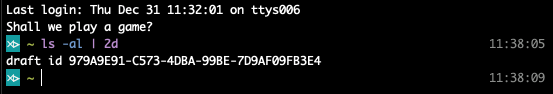

If I had Working Copy integration I could host my blog drafts there - and get the benefits of Git.
The integration is already there via the Files app.
I might have to write about the setup in another thread.
2 Likes
Yes. Please do. I would love to move my old (Editorial-based) posts into Drafts - to augment my knowledge base in Drafts. (Graphics, as we all know, might be a problem - but then they were with Editorial.)
Not sure how feasible this is, and it may have been answered or mentioned previously, but I would cast a vote for Asana.
+1 on Working Copy! Pretty much all my Markdown content ends up in GitLab sooner or later, and an action to integrate would be a timesaver.
I’d be interested in hearing about the files app setup as well.
See my new post for a first step integration with synced folders:
1 Like
Craftdocsapp would be great
1 Like
Craft don’t have any integration (API, URL scheme, scripting) information on their web site help pages. They also only talk about exporting in the app profile.
If they don’t have a way in, then share sheet and clipboard may be the only options for now.
2 Likes
Thanks yep I have managed to use a simple clipboard action and shortcut to get into an Inbox pgae which seems to work OK - I hope they release wider integration options generally
Office 365 and Google Docs are at the top of the list — as might be expected.
It seems rare for writing apps to be able to send to Google Docs, for some reason. Not everyone likes it (I’m not even sure I like it) but it is probably unrivalled as a way to easily collaborate on writing projects.
Don’t overlook the support for OneDrive and OneNote, which are Office 365 applications.
Google Drive is admittedly rather different to Google Docs though and can’t be utilised in quite the same way as the Microsoft option.
EDIT: Apparently, I missed/forgot that you can use the Google Drive support to create a true Google Doc  - https://actions.getdrafts.com/a/1NJ
- https://actions.getdrafts.com/a/1NJ
Since this thread just popped up: I’d like round-trip editing (though I’m aware that it’s probably not coming any time soon ;-). I’m working a lot with DEVONthink and I’d like to use Drafts as my markdown editor there, but that’s awkward: I can share the current document from DT to Drafts. However, there’s no easy way back from Drafts to DT: there’s an action to export to DT, but I want to overwrite the existing document. And apparently Drafts has no information as to its path…
Pipe to Drafts | drafts
Not until yesterday was I aware that you can pipe Terminal output to BBEdit like this: | bbedit. It didn’t take many seconds before I thought: What if you could do the same to Drafts, e.g.
ls | draftscat MyFile | drafts- etc.
In fact, it was rather easy to get this done utilizing Drafts URL scheme and a snippet like this:
Terminal output here | pbcopy; open 'drafts://x-callback-url/create?text=%7C%7Cclipboard%7C%7C'
which I immediately saved as a snippet in Alfred with the obvious(?) shortcut |drafts in order to mimic BBEdit’s facility.
However, this changes the clipboard and may even fail if there is not enough time to set it (but which I haven’t seen so far). If it’s not too demanding, given that Greg has complete control over Drafts’ whole code base, I thought, maybe this is a no-brainer for him—or any of you—to come up with a better solution, possibly with some options for tags and more. (There may even be a simpler alternative already that I may have overlooked.)
(My basic motivation for this wish comes from a lately attempt to simplify and automize the editing and creation of crontabs, files for Brett Terpstra’s Bunch, setting up directories for calendar workflows, checking disk contents etc. and using Drafts as a kind of scratch pad.)
4 Likes
One key problem to solve is how to percent encode the text of the draft. Another one is how to confect the rest of the URL, given that.
I think both of these are superable problems. However, I’m personally happy with the “trash the clipboard” approach.  And, oh, I already have a programming project for today…
And, oh, I already have a programming project for today…
Thanks for your concern,
Well, after a sleepless night and fiddling around with,
osascript -l JavaScript -e 'encodeURIComponent( some pesky multiline stuff here I wasn't able to sort out)'
I think the clipboard solution will have to do for now. (I managed to create a draft with a fixed string, containing \n but not a flexible solution with a variable containing ANY string.)
Since Alfred has a clipboard history it is not that bad after all—and if so—it is rather easy to save and later restore the old clipboard after dealing with Drafts. There may then be some timing issues you have to take care of though. Without further ado I added some more commands that
- saves the input from the pipe in a variable
input, - then saves the old clipboard in another variable
oldClipboard, - creates a new draft, and
- finally restores the old clipboard.
Terminal output | read -d $'\0' input; oldClipboard=``pbpaste``; echo $input | pbcopy; open "drafts://x-callback-url/create?text=%7C%7Cclipboard%7C%7C"; sleep .2; echo $oldClipboard | pbcopy
Maybe it’s not the neatest code but on the other hand as soon as I now type |dr in Terminal: Boom! Alfred inserts the code and another return gives me my much coveted draft with the Terminal output (and lo and behold—‘about’ the same clipboard as before since I didn’t bother to investigate if there was something else than text on the old clipboard).
This is it for now, but if there are already some code blocks that could be tweaked to a purer solution or other options I might have overlooked, I am still interested.
1 Like
I might add that it is not that I’m working in the Terminal a lot but with this solution it is easy to use Drafts as an interface for other things, e.g. crontab (which I know is deprecated but anyway). Just paste the previous snippet into whatever workflow and you have Drafts both as an editor and a backup of the work.
For one of my most recent purposes crontab -l |dr… (or even simpler Alfred) gives me a draft with the current scheduled cron jobs (tagged cron). With Drafts’ almost endless possibilities it is then easy to save/export the draft to install new cron jobs with an action or keyboard shortcut.
Won’t this be a Happy New Year!
1 Like
That was my thought, too: An easy-to-use springboard for Automating the creation of a draft from arbitrarily-sourced text.
One usage question: What makes a title? And what makes body text? Or is it literally allowing Drafts to pick the first line? (One could argue that what’s on the clipboard is the title - and the selected text the body.)
I’ll offer up this option based on what I have in place currently. I keep a scripts directory in my home folder on my Mac, and in it I have a script called todrafts.sh. The attributes are set to allow it to be executed.
#!/bin/zsh
STDIN=$(</dev/stdin)
osascript -e 'tell application "Drafts"
make new draft with properties {content: "'$STDIN'", flagged: false, tags: {}}
end tell'
It's a `zsh`-based script that takes the standard input (from the piped command) and dumps it into a shell variable. That variable is then concatenated with some AppleScript and executed via OSAScript to create a new draft with the content from standard input.
I have an entry in my configuration file for my shell to define an alias. The command to define an alias may vary a little between shells, but it is pretty universal
alias 2d "$HOME/scripts/todrafts.sh"
Now, my day to day shell is fish, and its config lives in
nano ~/.config/fish/config.fish, but present configuration settings, which is what we want next varies by shell. Forzsh, check out this, for bash and other even older shells, check this out.
With this alias defined to, and loaded by the shell, I can now issue commands like this at the command prompt.
ls-al |2d
This then executes the script and the ID of the new draft is put to the standard output.

If I were utilising it inside a shell script I would use the full path to the to drafts.sh script as I mostly shell script in zsh or bash for portability reasons, and it makes it much clearer what is going on in terms of following the script.
Hope that helps.
4 Likes
I was beginning to consider pulling something together in Python 3 - but this contribution of yours gets us, arguably, to where we need to be.
(I still might, particularly to offer a chance to modify the title line before creating the draft. And possibly doing some tagging.)
Good question, that I haven’t thought much about. Here are just some brief ideas (completely open to suggestion and change).
On one hand there may be files with standardized format that I want to be a bit careful about. On the other hand Drafts is so flexible and customizable that it is easy to standardize a workflow if wanted. Depending on the type av file there may be other options as well.
- Highly standardized formatted files (e.g. crontab) may be left as is but distinguished by an appropriate tag.
- Since several programming languages (Bash, Zsh, Python, Perl, osascript etc.) needs a ‘shebang’ with # in the first line it would be safest to reserve that for the title in drafts—or create a highly structured workflow taking care of that (but at he expense of higher uncertainty).
- Since # is used for headings in Markdown and comments there may be other plausible choices for titles in other files or ‘scratch pads’.
Thank you @Sylymer, exactly the pipe I was looking for!
1 Like